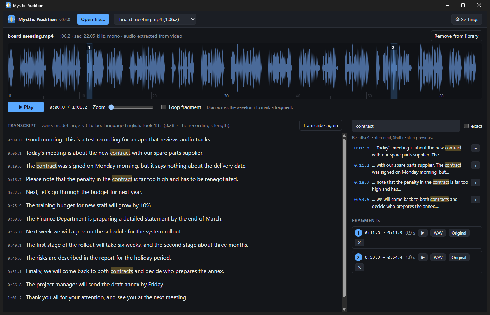

Open an audio or video file, read along as it is transcribed, search for a word or a phrase and play it from that exact moment. Compare fragments side by side and trim them without touching the sound.
Everything runs on your own computer. Recordings never leave it.

Latest release: checking…
The app itself, unpacked wherever you like. A double click on
mysttic-audition.pyw starts it. The first start installs
what it needs into its own folder, and the first transcription
downloads the speech model (1.6 GB). After that it works offline and
keeps itself up to date.
It needs 64-bit Windows 10 or 11 and Python 3.10 or newer from python.org, installed with the py launcher. Windows 11 already carries the WebView2 runtime the window is drawn with.
The app speaks English, with Polish to choose in its settings. Transcription works in Polish, English, German and the other languages Whisper knows, and you pick the language of each recording before it is transcribed. Every release comes with a SHA-256 checksum file, and the app checks the archive against it before installing an update.
A reviewing tool, not an editor: it shows, finds, compares and cuts, and leaves every sample of the recording as it was.
MP3, WAV, M4A, FLAC, OGG, Opus, WMA, and the sound track of MP4, MKV, MOV, AVI or WebM video. Nothing to convert first.
Whisper large-v3-turbo on your processor, with the time of every word. The text appears while it is recognised, a click on a word plays the recording from there, and uncertain words are underlined.
Case, diacritics and punctuation do not matter, and inflected forms
count: umowa finds umowy and
umowie, a whole phrase works the same way.
Mark a fragment on the waveform or straight from a search result. Keys 1 to 9 play them, and with the loop on two keys make an A/B comparison.
A WAV cut to the sample, identical to the original, or the original codec with its frames copied as they are. A save dialog asks where.
Its own window, one copy at a time. Closing it ends everything, the transcription and the memory the model takes included.
Once a day it looks at the releases on this site, downloads a newer one, checks it and installs it at the next start or with one click. Your files, models and settings stay untouched.
There is no account, no telemetry and no server of mine in the way.
Reading, transcribing and cutting all happen on your computer. The app keeps its working copies in its own folder and deletes them when you remove a file from its library.
Python packages on the first start, the speech model on the first transcription, and once a day the list of releases from the GitHub API, with no token and nothing about you or your computer. The update check can be turned off.
Files come only from this site's releases, over HTTPS. The size and the SHA-256 are checked before anything is unpacked, and an archive is never allowed to touch your data.